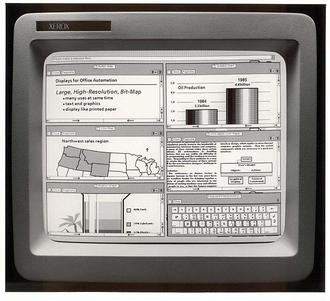
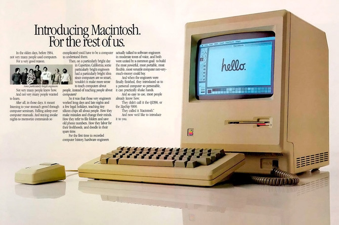
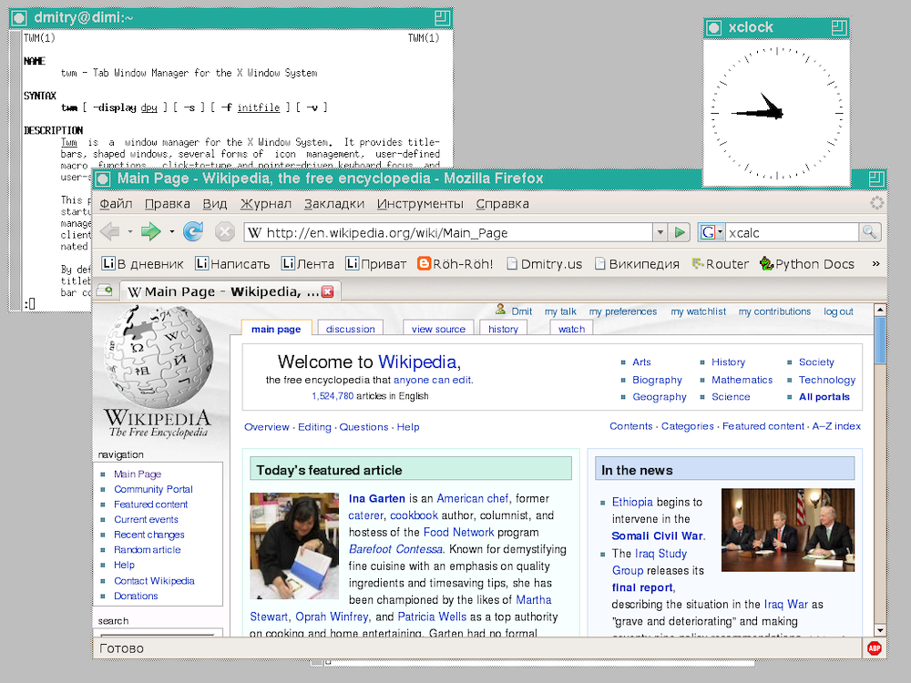

El escritorio de Linux¶
Al ser Linux una recopilación de software libre, con frecuencia tendremos varios programas alternativos para la misma tarea. Un claro ejemplo es el programa de escritorio.
Cada distribución hace su propia selección de programas, incluyendo su escritorio favorito. Los hay más populares que otros, no habiendo un ganador claro. De todas formas, muchas distribuciones nos permiten optar por otros escritorios alternativos.
Veamos las principales opciones.
Los orígenes¶
Hasta la década de 1970, todos los ordenadores funcionaban con terminales de texto:

El concepto de escritorio gráfico fue inventado en 1970 por el fabricante de fotocopiadoras XEROX, quien fundó un centro de investigación llamado XEROX PARC, en Palo Alto, California, con la idea de desarrollar nuevas tecnologías e introducirse en el mercado de los ordenadores.
Aquellos primeros programas de escritorio se limitaban a imágenes de baja resolución, en blanco y negro, pero era un primer paso.

En 1979, un acuerdo de Xerox con Apple para intercambiar tecnologías inspiró el lanzamiento del popular Macintosh:

Microsoft copió la idea, y la década de los noventa fue testigo de la generalización de los escritorios gráficos gracias al lanzamiento de Windows 3.
Pero antes de esto, durante los años ochenta, el MIT ya había desarrollado un sistema gráfico para UNIX, llamado “X Window System”. No era un escritorio, sino un software que permitía mostrar los programas en ventanas separadas:

Basándose en este estándar, surgieron varios programas de escritorio para Unix. Uno de los más populares fue CDE, abreviatura de Common Desktop Environment, creado en 1993 por un grupo de empresas formado por Hewlett-Packard, IBM, Novell y Sun Microsystems.

Escritorios más populares¶
Las primeras versiones de Linux funcionaban solo con un shell de texto. En 1996, el programador alemán Matthias Ettrich se inspiró en el escritorio CDE para crear KDE, considerado en la actualidad como uno de los más completos. Incorpora multitud de herramientas complementarias, y tiene un comportamiento bastante similar a Windows.

KDE está desarrollado por una amplia comunidad de programadores, pero no está exento de polémica. En sus inicios, algunos de los componentes no eran software libre, cosa que se ha ido solucionando con el paso del tiempo.
A partir de la versión 5, KDE pasó a llamarse Plasma.
Para hacer frente al problema de licencias de KDE, los mexicanos Miguel de Icaza y Federico Mena crearon en 1997 el escritorio GNOME, como parte del proyecto GNU. El nombre es un acrónimo de “GNU Network Object Model Environment”.
En la actualidad GNOME parece ser el escritorio favorito de la mayoría de distribuciones.

Durante los primeros años del siglo actual, KDE y Gnome fueron los dos escritorios más populares. Pero el lanzamiento en 2011 de la versión 3 de GNOME produjo un gran aluvión de críticas por su usabilidad. Tenía como propósito proporcionar una experiencia parecida al comportamiento de las tablets, alejándose del concepto clásico de escritorio al que los usuarios estaban acostumbrados. Esto hizo que muchas personas prefirieran seguir usando GNOME 2, y que por otra parte surgiera un proyecto paralelo denominado MATE, derivado de GNOME 2 y orientado a proporcionar un escritorio con aspecto más tradicional.

MATE es ideal para usuarios que quieran un escritorio clásico con poco consumo de recursos, y sin tantos efectos especiales como pueden proporcionar las versiones actuales de GNOME.
Cuando GNOME 3 hizo su aparición, los responsables de Linux Mint descartaron incorporarlo a su distribución, y optaron por seguir con GNOME 2. Dado que este ya no iba a seguir evolucionando, inicialmente incorporaron MATE, pero ante lo confuso de la situación, decidieron abordar un proyecto propio denominado Cinnamon. En la actualidad, Mint se distribuye con ambas alternativas, MATE y Cinnamon, siendo esta última la versión oficial.

Otra de las consecuencias de la polémica surgida en torno a GNOME 3 fue el anuncio por parte de Ubuntu de lanzar su propio escritorio denominado Unity.

Unity también se aleja del concepto clásico de escritorio, estando concebido para todo tipo de dispositivos, ordenadores, tablets, TV, etcétera. Pero tampoco ha estado exento de polémica. Desde su lanzamiento, se vió que los requerimientos de hardware eran elevados, y que su rendimiento en ordenadores de gama baja era limitado, resultando muy lento en su funcionamiento. Con el tiempo se han ido resolviendo estos problemas, pero Unity no ha llegado a convertirse en una alternativa al resto de escritorios. En 2017, los responsables de Ubuntu anunciaron su apuesta por las versiones recientes de GNOME, dejando relegado a Unity.
Como alternativa a la guerra de escritorios y sus prestaciones gráficas, si buscamos un escritorio sencillo, vistoso y que consuma pocos recursos, probablemente la versión más popular sea Xfce, presente en muchas distribuciones como alternativa a otros escritorios más potentes. Xfce es una buena opción si tenemos un ordenador antiguo o si estamos trabajando con una máquina virtual y tenemos problemas de rendimiento.

Otra alternativa de escritorio ligero es lxde

Obtener Linux¶
Para instalar Linux en nuestro equipo necesitamos un DVD de instalación. El primer paso es escoger una distribución, y seguidamente acudir a su página web para descargar dicho DVD.
Se diría que hay dos grandes distribuciones de referencia, RedHat en el mundo de la empresa, y Ubuntu, más orientada al mercado doméstico, aunque presente en otros ámbitos. Ubuntu es un derivado de Debian, que es menos popular por excluir todo tipo de software con licencia, aunque sea la favorita de muchos defensores del software libre.
Si optamos por RedHat para darle un uso personal, lo más lógico es descargar e instalar Fedora. Por defecto viene con el escritorio Gnome, pero en esta otra página tenemos más alternativas.
Si optamos por Ubuntu, el escritorio por defecto también es Gnome. Si queremos otras opciones, necesitaremos una distribución derivada de Ubuntu:
KDE es un escritorio muy vistoso, que aporta muchas funcionalidades, pero personalmente prefiero la sencillez de Xfce. Mint con escritorio Cinnamon es una solución intermedia, muy amigable, estable y fácil de instalar y utilizar. Pero al ser una distro basada en Ubuntu, su repositorio de software suele ir un paso atrás, y no siempre encontraremos las versiones más actuales de cada programa. La alternativa es acudir a la página web del programa en cuestión y descargar desde allí la última versión, prescindiendo del repositorio oficial de la distribución.
En este cuaderno usaré Xubuntu. Pero antes de instalarlo, necesitamos una máquina virtual. En el siguiente capítulo veremos como crearla.